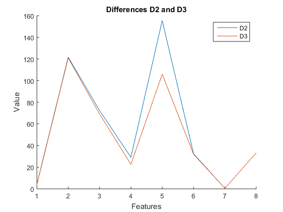
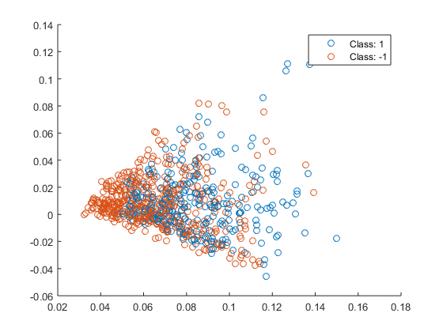
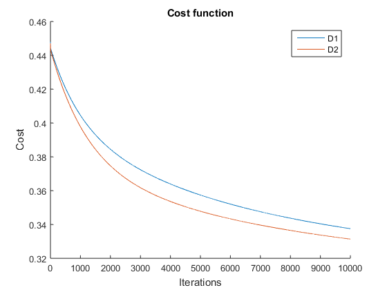
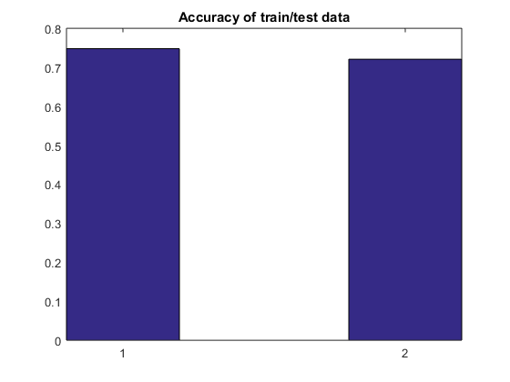
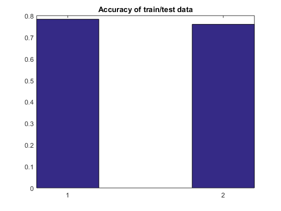
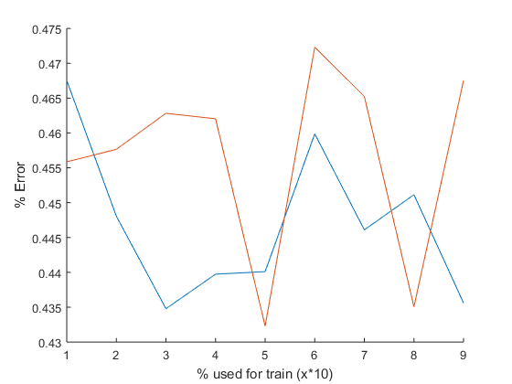

Contents
QUESTION BLOCK 1
addpath('res') load('data/diabetes.mat');
1) The cardinality is 768
2) Each sample has 8 features
3) The mean value of the training set:
nanmean(x,2)
ans =
4.4947
121.6868
72.4052
29.1534
155.5482
32.4575
0.4719
33.2409
QUESTION BLOCK 2
1) Create a new dataset x1 replacing the NaN values with the mean value of the corresponding attribute without considering the missing values.
x1 = zeros(size(x)); x1(~isnan(x)) = x(~isnan(x)); for i=1:size(x,1) meanval = nanmean(x(i,:)); x1(i,isnan(x(i,:))) = meanval; end
2) Create a new dataset x2, replacing the NaN values with the mean value of the corresponding attribute without considering the missing values conditioned to the class they belong, i.e. replace the missing attribute values of class +1 with the mean of that attribute of the examples class +1, and the same for the other class.
x2 = zeros(size(x)); x2(~isnan(x)) = x(~isnan(x)); for i=1:size(x,1) meanvalplus = nanmean(x(i,y==1)); meanvalminus = nanmean(x(i,y==-1)); x2(i,isnan(x(i,y==1))) = meanvalplus; x2(i,isnan(x(i,y==-1))) = meanvalminus; end % 3) [OPTIONAL]
4) Which are the new mean values of each dataset?
figure; hold on plot(mean(x1,2)); plot(mean(x2,2)); hold off title('Differences D2 and D3') legend('D2','D3'); ylabel('Value'); xlabel('Features'); % Normalize vectors to give all features the same classification weight normx1 = normr(x1); normx2 = normr(x2);
EXTRA Reduce dimensionality to visualize the dataset in the space
A = pca(normx1',3); B=A(y==1,:); C=A(y==-1,:); figure; hold on scatter3(B(:,1),B(:,2), B(:,3)); scatter3(C(:,1),C(:,2), C(:,3)); legend('Class: 1','Class: -1') hold off
QUESTION BLOCK 3
1) In this model you have to learn the threshold value. Explain how you can accomodate this parameter.
The trhreshold of the hyperplane would be the corresponding value to w0 in the weights vector. > theta1(1) > theta2(1)
2) Calculate the weights for linear regression
[theta1, X1, CostHistory1] = gradientDesc(normx2', zeros(9,1)+.5, y, 0.9, 10000); [theta2, X2, CostHistory2] = gradientDesc(normx1', zeros(9,1)+.5, y, 0.9, 10000); figure; hold on; plot(CostHistory1); plot(CostHistory2); hold off; title('Cost function'); xlabel('Iterations'); ylabel('Cost'); legend('D1','D2')
3) In order to check the error rate we do X*theta=YY and after that compare YY with the original y vector.
yy1 = sign(normr(X1)*theta1); yy2 = sign(normr(X2)*theta2); gt1 = yy1==y; gt2 = yy2==y; % Number of correctly classified items: numm1 = sum(gt1); % Percent of hits in D1 pc1 = numm1/size(x,2) numm2 = sum(gt2); % Percent of hits in D2 pc2 = numm2/size(x,2)
pc1 =
0.7435
pc2 =
0.7565
The error rates are quite significant, 0.2565 and 0.2435. The parameters used for gradient descent are: alhpa = 0.9 and iterations = 10000
QUESTION BLOCK 4
a)
clear all; close all; clc;
b)
load('data/diabetes.mat'); x2 = zeros(size(x)); x2(~isnan(x)) = x(~isnan(x)); for i=1:size(x,1) meanvalplus = nanmean(x(i,y==1)); meanvalminus = nanmean(x(i,y==-1)); x2(i,isnan(x(i,y==1))) = meanvalplus; x2(i,isnan(x(i,y==-1))) = meanvalminus; end
c) First of all, normalize the data, and add the 1's vector:
x2 = normr(x2);
%x2 = vertcat(ones(1,size(x,2)),x2);
Now split the data
ff = int16((size(x,2)/5)*4); x2_train = x2(:,1:ff); x2_test = x2(:,ff+1:size(x2,2)); y_train = y(1:ff); y_test = y(ff+1:size(x2,2));
d) Train the model
[theta, X, CostHistory1] = gradientDesc(x2_train', zeros(9,1)+.5, y_train, 0.9, 10000); x2_testt = vertcat(ones(1,size(ff+1:size(x2,2),2)),x2_test); % Analyze train data res_train = sign(X*theta); diff_train = res_train==y_train; tot_train = sum(diff_train); pc_train = tot_train/double(ff); % Analyze test data res_test = sign(x2_testt'*theta); diff_test = res_test==y_test; tot_test = sum(diff_test); pc_test = tot_test/size(ff+1:size(x2,2),2); figure; bar([pc_train, pc_test],.4); title('Accuracy of train/test data')
e) The error rate are around 25% in both cases, what means that the samples in the train set and in the test set have a similar distribution.
QUESTION BLOCK 5
a)
clear all; close all; clc;
b) Split the data
load('data/diabetes.mat'); percent = 0.8; ff = int16((size(x,2)/100)*(100*percent)); x_train = x(:,1:ff); x_test = x(:,ff+1:size(x,2)); y_train = y(1:ff); y_test = y(ff+1:size(x,2)); clear x y
c) Replace NaN's
x2_train = zeros(size(x_train)); x2_train(~isnan(x_train)) = x_train(~isnan(x_train)); x2_test = zeros(size(x_test)); x2_test(~isnan(x_test)) = x_test(~isnan(x_test)); for i=1:size(x_train,1) % Calculate means meanvalplus = nanmean(x_train(i,y_train==1)); meanvalminus = nanmean(x_train(i,y_train==-1)); % Replace NaN's by means x2_train(i,isnan(x_train(i,y_train==1))) = meanvalplus; x2_train(i,isnan(x_train(i,y_train==-1))) = meanvalminus; x2_test(i,isnan(x_test(i,y_test==1))) = meanvalplus; x2_test(i,isnan(x_test(i,y_test==-1))) = meanvalminus; end
c) Normalize the data
mn = min(x2_train,[],2); mx = max(x2_train,[],2); for i=1:size(x2_train,1) x2_train(i,:) = (x2_train(i,:) - mn(i)) / (mx(i) - mn(i)); x2_test(i,:) = (x2_test(i,:) - mn(i)) / (mx(i) - mn(i)); end clear mn mx [theta, X, CostHistory1] = gradientDesc(x2_train', zeros(9,1)+.5, y_train, 0.9, 10000); x2_testt = vertcat(ones(1,size(x2_test,2)),x2_test); % Analyze train data res_train = sign(X*theta); diff_train = res_train==y_train; tot_train = sum(diff_train); pc_train = tot_train/double(ff); % Analyze test data res_test = sign(x2_testt'*theta); diff_test = res_test==y_test; tot_test = sum(diff_test); pc_test = tot_test/size(x2_test,2); figure; bar([pc_train, pc_test],.4); title('Accuracy of train/test data')
f) g) Again we have similar results, the difference between the training and the test error is quite larger than in the previous case. The difference is caused by the substitution policy, now we are using just a part of the whole information.
QUESTION BLOCK 6
a)
clear all; close all; clc; load('data/diabetes.mat'); percent = 0.01; percent_rg = (1:9)./10.; iter = 10000; alpha = 0.000001; normalize = 0; pc_train_rg = zeros(size(percent_rg,2),1); pc_test_rg = zeros(size(percent_rg,2),1); for i=1:size(percent_rg,2) [ pc_train, pc_test ] = evaluate( x, y, percent_rg(i), alpha, iter, normalize ); pc_train_rg(i) = pc_train; pc_test_rg(i) = pc_test; end close all figure; hold on plot(1-pc_train_rg); plot(1-pc_test_rg); xlabel('% used for train (x*10)') ylabel('% Error')
The results show us that depending on which percentage of the dataset we use we can obtain better or worse results. The obvious conclusion is that the data is not well distributed.